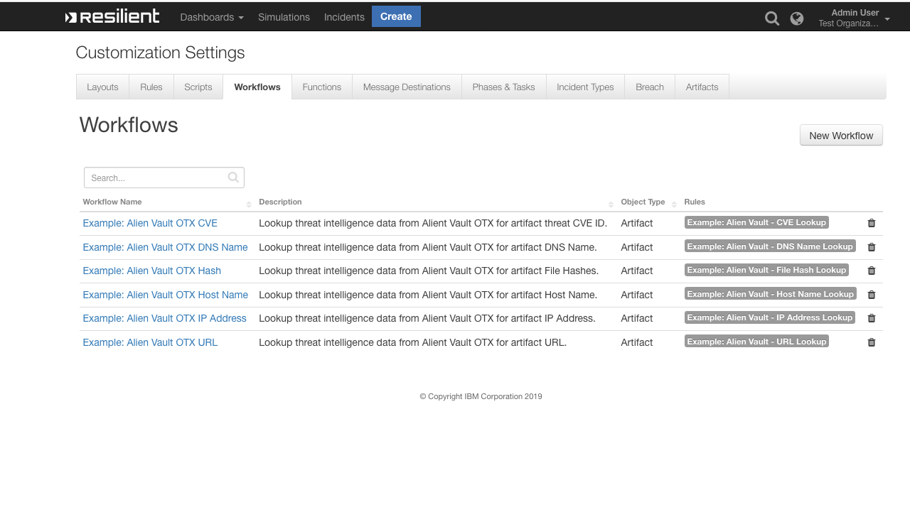
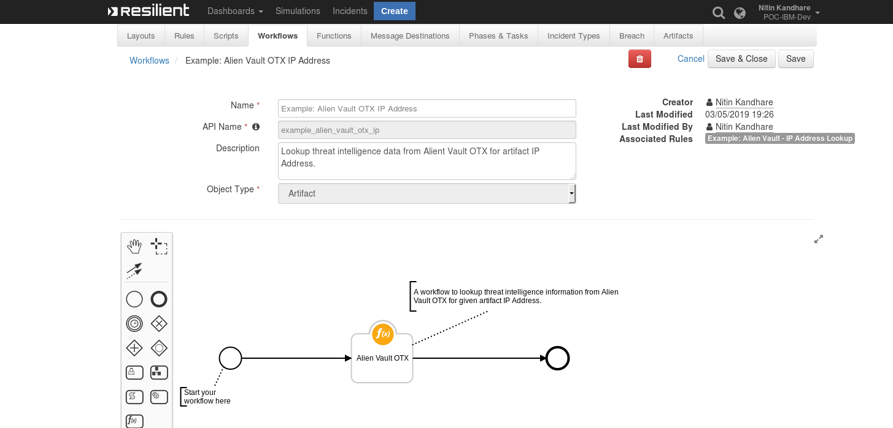
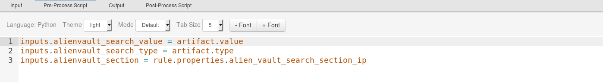
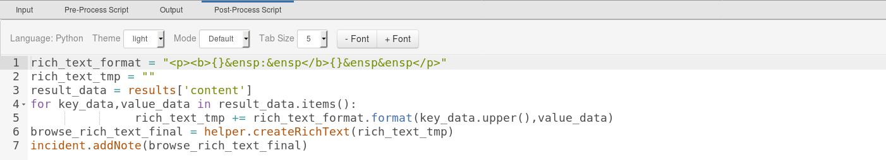
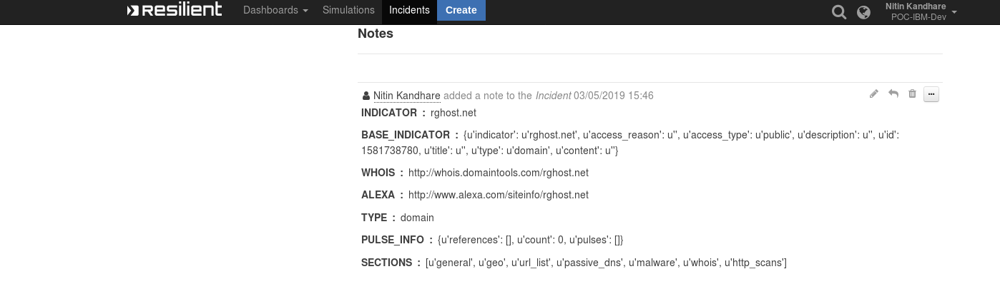

AlienVault OTX#
Table of Contents#
About This Package:#
This package contains a Resilient Function that allows you to search your Alien Vault OTX platform with the given query for Threat Intelligence data about a particular Threat Indicator
Threat intelligence indicators that can be searched for are:
IP Address
Domain
Host Name
File Hashes
URL
CVE
The function makes use of the Alien Vault OTX
api/v1/indicatorsAPI call to get information on a given queryMore information on Alien Vault OTX

Sample Function layout:#

Sample Pre-Process Script#

Sample Post-Process Script#

Prerequisites:#
Resilient Appliance >= v31.0.0
Integrations Server running resilient_circuits >= v30.0.0
Account with Alien Vault OTX
A
DirectConnect OTXAPI Key from Alien Vault
Installation#
This package requires that it is installed on a RHEL or CentOS platform and uses the resilient-circuits framework.
Install this package using
pip:Download the
.zipfile from our App Exchange and extract it. You will find a file called:fn_alienvault_otx-<version>.tar.gzCopy this file to your Integrations Server
To install the package, run:
$ pip install pip install fn_alienvault_otx-<version>.tar.gz
To import the function, example rules and workflows into your Resilient Appliance, run:
$ resilient-circuits customize -y -l fn-alienvault-otx
To update your
app.configfile with the required Alien Vault configurations, run:$ resilient-circuits config -u
Then open your
app.configfile and the following configuration data is added:[fn_alienvault_otx] # OTX API Key to Access the Alien Vault OTX Service av_api_key=<<DirectConnect OTX API Key>> #Base URL Path of Alien Vault OTX av_base_url=https://otx.alienvault.com/api/v1 # Proxy Server by Default will be None proxy=None
Run resilient-circuits:
$ resilient-circuits run
To uninstall:
$ pip uninstall fn-alienvault-otx
Function Inputs#
Function Name |
Type |
Required |
Example |
Info |
|---|---|---|---|---|
|
|
Yes |
|
The search value to send to Alien Vault OTX (may be any String that contains an IP Address, URL, Hash, Threat CVE ID, DNS Name, System Name.) |
|
|
Yes |
|
The search type to send to Alien Vault OTX (may be any String type can be an IP Address, URL, Hash, Threat CVE ID, DNS Name, System Name.) |
|
|
Yes |
|
The section to search for Threat Intelligence Data from Alien Vault, this section may be different for different search type (may be any string general, geo, malware, reputation, url_list, passive_dns, http_scans etc) |
Function Output#
To see the output of each of the API calls for this Function, we recommend running
resilient-circuitsinDEBUGmode.To do this run:
$ resilient-circuits run --loglevel=DEBUG
Sample Output Displayed on Incident Notes Section#

Pre-Process Script#
This example sets the alienvault_search_value, alienvault_search_type, alienvault_section inputs to the value and type of the Artifacts and sections the user took action on
# The search value to send to Alien Vault OTX (may be any String that contains an IP Address, URL, Hash,Threat CVE ID,DNS Name,System Name.)
inputs.alienvault_search_value = artifact.value
#The search type to send to Alien Vault OTX (may be any String type can be an IP Address, URL, Hash,Threat CVE ID,DNS Name,System Name.)
inputs.alienvault_search_type = artifact.type
#The section to search for Threat Intelligence Data from Alien Vault, this section may be different for different search type(may be any string general, geo, malware,reputation, url_list, passive_dns, http_scans etc)
inputs.alienvault_section = rule.properties.alien_vault_search_section_ip
Post-Process Script#
result_data = results['content']
for key_data,value_data in result_data.items():
rich_text_tmp += rich_text_format.format(key_data.upper(),value_data)browse_rich_text_final = helper.createRichText(rich_text_tmp)
incident.addNote(browse_rich_text_final)
Rules#
Rule Name |
Object Type |
Workflow Triggered |
Activity Fields |
|---|---|---|---|
Example: Alien Vault - CVE Lookup |
|
|
|
Example: Alien Vault - DNS Name Lookup |
|
|
|
Example: Alien Vault - File Hash Lookup |
|
|
|
Example: Alien Vault - Host Name Lookup |
|
|
|
Example: Alien Vault - IP Address Lookup |
|
|
|
Example: Alien Vault - URL Lookup |
|
|
|
Using the Alien Vault OTX Function#
The Alien Vault Function can be called on artifact like IP Address, DNS Name, System Name, URL, URL Referer, Hashes, Threat CVE ID.
After invoking a Rule on the Artifact, we need to choose the
Sectionbased on the ArtifactFor more info on what
sectionrefers to, please see: https://otx.alienvault.com/api